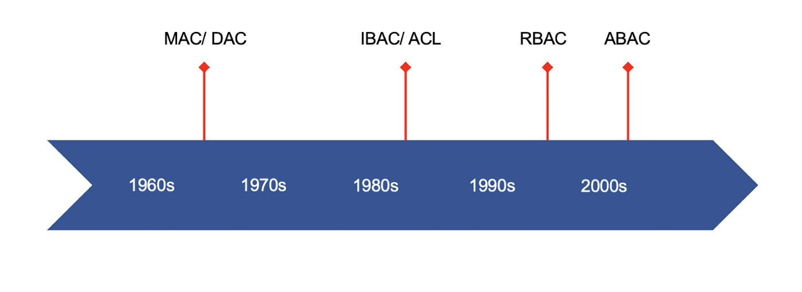

Hello,大家好，我是小毛驴。欢迎大家来到每周知识点介绍栏目。本周我将带领大家一起来了解下业内较为成熟的权限系统设计方案，包含ACL, DAL, MAC, RBAC, ABAC。
通过本文的介绍，大家可以了解一些关于权限系统的概念，方案，还有一些在方案选型上的建议。好了，废话不多说，我们进入正题吧。
什么是权限控制
在现实场景中有些操作只能由某个特定的人或特定岗位来完成，例如对外的公章，只能由老板来在确认后使用，或者你的请假条，将由你的直属上线来进行审批。
将这些“权限要求”搬到信息化系统之后，就要求我们的信息化系统也能进行相应的权限控制，保证某些资源，操作只能由特定的人员，岗位来访问，操作。
权限管理模式有哪些
在IT届长时间的演化后，将一些权限系统设计的思路抽象化，形成了一些模式，这些模式就是：

ACLDACMACRBACABAC
重要名称解释
Subject实体，可指代人，群组等Object对象，需要权限才能操作的对象,有时也会用Resources资源替代Action操作，对Object进行的权限操作，有时也会用Operation替代Permission权限，有时也会用PrivilegesGroup群组，Subject的群组Role角色，权限的群组，集合
ACL: Access Control List 访问控制列表
定义
Subject能对Object进行ActionSubject可以是单个用户也可以是群组
示例
给张三授予文档的创建权限。
1
2
3Subject: 张三
Action: 创建
Object: 文档张三现在可以创建文档了。
DAC: Discretionary Access Control 自主访问控制

DAC是ACL的一种实现，强调灵活性。纯粹的ACL，权限由中心管理员统一分配，缺乏灵活性。为了加强灵活性，在ACL的基础上，DAC模型将授权的权力下放，允许拥有权限的用户，可以自主地将权限授予其他用户。
比如，在纯粹ACL模型下，每次新人培训，人事总监都要通知IT部，将培训文档的访问权限授予新人。在DAC模型下，人事总监只需将文档的访问权限授予人事专员。之后，每次新人培训，由人事专员将文档的访问权限授予不同的新人。
定义
Subject能对Object进行ActionSubject能给其他Subject授权
示例
给张三授予文档的创建权限。
1
2
3Subject: 张三
Action: 创建
Object: 文档张三现在可以创建文档了，并且张三可以将这个权限授予给其他人。
张三给李四授权创建文档权限。
1
2
3Subject: 李四
Action: 创建
Object: 文档李四现在可以创建文档了。
MAC: Mandatory Access Control 强制访问控制
定义
Subject能对Object进行ActionObject能被Subject进行ActionSubject可以是单个用户也可以是群组
注意，MAC中的权限控制是双向的，既要确认用户是否有对资源的操作权限，也要确定资源是否能被这个用户进行操作的权限。适合保密程度要求高的场景。
示例
给张三授予文档的创建权限。
1
2
3Subject: 张三
Action: 创建
Object: 文档将文档的被创建权限授权给张三。
1
2
3Subject: 文档
Action: 被创建
Object: 张三张三现在可以创建文档了。
RBAC: Role-Based Access Control 基于角色的访问控制

定义
Subject拥有一个角色,这个角色拥有对Object进行Action的Permission- 具体的权限设计可以实现
MAC或者DAC - 结构（Subject or Group） - Role - Permission - Object
- 核心概念
- Subject
- Role
- Permission
- Operation
群组Group VS 角色Role
- Group: 实体的集合
- 张三，张四，张五都是张家人。（张家是一个群组）
- Role: 权限的集合
- 文档管理员是一个角色，可以对文档进行查阅，编辑，创建。
- 角色可以分配给实体或者群组，例如将文档管理员分配给张家人，或者分配给张三。
示例
设备权限集合名叫
编辑文档(write articel)和管理文档(manage articel)1
2
3
4
5
6
7
8
9
10
11
12
13
14
15Permission:
- Name: write article
- Operations:
- Object: Article
Action: Created
- Object: Article
Action: Updated
- Object: Article
Action: Read
- Name: manage article
- Operations:
- Object: Article
Action: Delete
- Object: Article
Action: Read新建一个角色叫
写手(Writer)，给它绑定编辑文档(write articel)权限；一个角色叫管理员,给它绑定管理权限；再新建一个CEO角色，它拥有所有权限。1
2
3
4
5
6
7
8
9
10
11Role:
- Name: Writer
Permissions:
- write article
- Name: Manager
Permissions:
- manage article
- Name: CEO
Permissions:
- write article
- manage article给张三绑定
写手(Writer)角色张三现在可以创建，修改，读取文档了
1
2
3Subject: 张三
Roles:
- Writer给李四绑定
管理员角色1
2
3Subject: 李四
Roles:
- Manager李四现在可以读取，删除文档了
给王五绑定
CEO角色1
2
3Subject: 王五
Roles:
- CEO王五现在可以读取，创建，修改，删除文档了
ABAC: Attribute-Based Access Control 基于属性的访问控制

定义
- 拥有xx属性的
Subject在xx环境属性Environment的约束下可以对xxx的Object进行Action - 概念:
- 主要策略：规定哪些属性的主体可以对哪些属性的资源在哪些属性的情况下进行哪些操作
- 属性：
- Subject
- age, clearance, department, role, job title.
- Action
- read, delete, view, approve
- Resouce
- the object type (medical record, bank account…), the department, the classification or sensitivity, the location
- Contextual (environment)
- attributes that deal with time, location or dynamic aspects of the access control scenario
- Subject
- 实现标准
- XACML (eXtensible Access Control Markup Language)
- ALFA (XACML)
示例
张三作为销售部门的写手，可以在2022-01-01到2022-12-31期间，对归属于科技，软件的草案和文档进行创建和更新.
1 | Subject: |
AWS和阿里的资源管理策略都是使用ABAC
阿里
1
2
3
4
5
6
7
8
9
10
11
12
13
14
15
16{
"Version": "1",
"Statement":
[{
"Effect": "Allow",
"Action": ["oss:List*", "oss:Get*"],
"Resource": ["acs:oss:*:*:samplebucket", "acs:oss:*:*:samplebucket/*"],
"Condition":
{
"IpAddress":
{
"acs:SourceIp": "42.160.1.0"
}
}
}]
}AWS
1
2
3
4
5
6
7
8
9
10
11
12
13
14
15
16
17
18
19
20
21
22
23
24
25
26
27{
"Version": "2012-10-17",
"Statement": [
{
"Effect": "Allow",
"Action": [
"ec2:TerminateInstances"
],
"Resource": [
"*"
]
},
{
"Effect": "Deny",
"Action": [
"ec2:TerminateInstances"
],
"Condition": {"NotIpAddress": {"aws:SourceIp": [
"192.0.2.0/24",
"203.0.113.0/24"
]}},
"Resource": [
"arn:aws:ec2:<REGION>:<ACCOUNTNUMBER>:instance/*"
]
}
]
}
ABAC协议变种PBAC: Policy-Based Access Control 基于策略的访问控制
和ABAC的区别，ABAC使用一些XML的标准，但PBAC并未进行明确的规则限制，更加灵活一些。具体可以查阅这里。
ABAC协议变种CBAC: Context-based access control 基于声明的访问控制
这是微软在ABAC基础的改版协议，具体可以查阅这里。
对比
| DAC | MAC | RBAC | ABAC | |
|---|---|---|---|---|
| 灵活性 | 高 | 低 | 高 | 非常高 |
| 实现复杂度 | 高 | 中 | 低 | 中 |
| 权限验证基础 | 实体上绑定的权限 | 实体和对象相对设定的要求 | 角色上的权限 | 属性的验证 |
| 当前使用广度 | 高 | 低 | 非常高 | 国内不多 |
总结
虽说随着时间的前景，权限管理的模式不断的在推陈出新，新模式的灵活性也越来越强，但也相应的带来了一些复杂性。在实际的生产过程中需要根据项目的实际需求来抉择使用哪一种模式。
参考资料
- https://zhuanlan.zhihu.com/p/70548562
- https://dzone.com/articles/acl-rbac-abac-pbac-radac-and-a-dash-of-cbac
- https://dinolai.com/notes/others/authorization-models-acl-dac-mac-rbac-abac.html
- https://www.dnsstuff.com/rbac-vs-abac-access-control
- https://www.axiomatics.com/policy-based-access-control/
- https://blog.plainid.com/the-advantage-of-pbac-over-the-traditional-abac